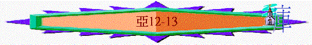

|
耶和華心�媟巨鉹齞� |
|||
|
為選民犯罪而大發烈怒 |
為重建錫安而極其火熱 |
為復興錫安而極其火熱 |
為彌賽亞國而親自成就 |
|
1:2-6 |
1:7-6:15 |
7-8 |
9-14 |
1.為拯救群羊而極其熱心----第1默示(9-11)
2.為那日來臨而親自成就----第2默示(12-14)
〜12-14章題及很多「那日」字眼，而那日是指將來大審判及基督再降臨的日子
A.成就得救的日子(12-13)
a.那日----耶路撒冷必令列邦受損(12:1-9)
(1)令人昏醉的杯
「耶和華論以色列的默示。鋪張諸天、建立地基、造人裡面之靈的耶和華說：我必使耶路撒冷被圍困的時候，向四圍列國的民成為令人昏醉的杯；這默示也論到猶大（或作：猶大也是如此）。」12:1-2
「出來要迷惑地上四方（原文作角）的列國，就是歌革和瑪各，叫他們聚集爭戰。他們的人數多如海沙。他們上來遍滿了全地，圍住聖徒的營與蒙愛的城，就有火從天降下，燒滅了他們。」啟20:8-9
〜耶和華是鋪張諸天、建立地基、造人裡面之靈的神，祂掌管大自然及整個世界，祂也能掌握人的心，所以祂是世界及歷史的神，祂可預知一切也能掌握一切。
∼祂知道及掌握外邦人有一日會圍攻耶路撒冷，但至終如昏醉的人，失去能力，不能站穩
∼啟20也預言將來有敵神的勢力聯合地上四方的列國，要圍住聖徒的營與蒙愛的城(應指耶路撒冷)，但神要燒滅他們。
(2)作一塊重石頭
「那日，我必使耶路撒冷向聚集攻擊他的萬民當作一塊重石頭；凡舉起的必受重傷。」12:3
∼神也使耶路撒冷一塊重石頭，列邦想聯合舉起攻擊她，但至終如重石般，被她壓傷
(4)作旅長們的能力
「耶和華說：到那日，我必使一切馬匹驚惶，使騎馬的顛狂。我必看顧猶大家，使列國的一切馬匹瞎眼。猶大的族長必心裡說：『耶路撒冷的居民倚靠萬軍之耶和華他們的神，就作我們的能力。』」亞
12:4- 5
∼耶路撒冷的居民倚靠萬軍之耶和華，神也看顧猶大家，使列國有能力的馬也驚惶及瞎眼，猶大的族長們也看到能力在耶路撒冷的居民中！
(5)如火盆在木柴中
「那日，我必使猶大的族長如火盆在木柴中，又如火把在禾捆裡；他們必左右燒滅四圍列國的民。耶路撒冷人必仍住本處，就是耶路撒冷。」12:6
∼猶大的族長如火一樣燒滅列國的民，列邦如禾捆及捆木柴般被燒毀！
(6)如大衛
「耶和華必先拯救猶大的帳棚，免得大衛家的榮耀，和耶路撒冷居民的榮耀，勝過猶大。（那日，耶和華必保護耶路撒冷的居民。他們中間軟弱的必如大衛；大衛的家必如神，如行在他們前面之耶和華的使者。那日，我必定意滅絕來攻擊耶路撒冷各國的民。」12:7-9
∼神不單是看顧耶路撒冷（大衛家的中心），祂沒有忽略猶大家的人，他們可能分散在城外，不及耶路撒冷般有城牆的保障，他們也可能住帳棚，但神不會單使耶路撒冷得榮耀，祂要整體猶大家也得榮耀。
〜另外，選民必會從軟弱變為如大衛及耶和華的使者般剛強，擊倒列國
b.那日----大衛之家必回轉得復興(12:10-14)
(1)被靈澆灌
「我必將那施恩叫人懇求的靈，澆灌大衛家和耶路撒冷的居民。他們必仰望我（或作：他；本節同），就是他們所扎的；必為我悲哀，如喪獨生子，又為我愁苦，如喪長子。」12:10
「因我使他們被擄到外邦人中，後又聚集他們歸回本地，他們就知道我是耶和華他們的神；我必不再留他們一人在外邦。我也不再掩面不顧他們，因我已將我的靈澆灌以色列家。這是主耶和華說的。」」結39:28-29
「以後，我要將我的靈澆灌凡有血氣的。你們的兒女要說預言；你們的老年人要做異夢，少年人要見異象。在那些日子，我要將我的靈澆灌我的僕人和使女。」珥2:28-29
∼到那日，神的靈會充滿以色列家，使他們回轉，尋求神
(2)仰望基督
「惟有一個兵拿槍扎他的肋旁，隨即有血和水流出來。」約19:34
「看哪，他駕雲降臨！眾目要看見他，連刺他的人也要看見他；地上的萬族都要因他哀哭。這話是真實的。阿們！」啟1:7
〜「所扎的」應指基督，他們從前殺害耶穌，但在末日中，他們會重新仰望他們所扎、所殺的主
(3)哀痛認罪
「那日，耶路撒冷必有大大的悲哀，如米吉多平原之哈達臨門的悲哀。境內一家一家地都必悲哀。大衛家，男的獨在一處，女的獨在一處。拿單家，男的獨在一處，女的獨在一處。利未家，男的獨在一處，女的獨在一處。示每家，男的獨在一處，女的獨在一處。」12:11-13
「這事以後，約西亞修完了殿，有埃及王尼哥上來，要攻擊靠近伯拉河的迦基米施；約西亞出去抵擋他。他差遣使者來見約西亞，說：「猶大王啊，我與你何干？我今日來不是要攻擊你，乃是要攻擊與我爭戰之家，並且神吩咐我速行，你不要干預神的事，免得他毀滅你，因為神是與我同在。」約西亞卻不肯轉去離開他，改裝要與他打仗，不聽從神藉尼哥之口所說的話，便來到米吉多平原爭戰。弓箭手射中約西亞王。王對他的臣僕說：「我受了重傷，你拉我出陣吧！」他的臣僕扶他下了戰車，上了次車，送他到耶路撒冷，他就死了，葬在他列祖的墳墓裡。猶大人和耶路撒冷人都為他悲哀。」代下35:20-24
〜「如米吉多平原……悲哀」應指耶路撒冷人為約西亞被埃及王殺死在米吉多，全國悲哀，他們在末日的哀痛也是如此
〜大衛家----王族、拿單家、先知，利未家----祭司，示每家----可能指掃羅後代；他們也不分彼此，在神面前自卑認罪
c.那日----猶大居民必蒙除罪得潔
(1)除掉罪惡
「那日，必給大衛家和耶路撒冷的居民開一個泉源，洗除罪惡與污穢。」13:1
「於是以色列全家都要得救。如經上所記：必有一位救主從錫安出來，要消除雅各家的一切罪惡；」羅11:26
∼神必給耶路撒冷的居民開一個泉源，洗除罪惡與污穢，此泉源可能指耶穌，如活水，祂使人有永生，也能消除雅各家的一切罪惡，另外此泉源也可能指聖靈如活水般洗除人的罪。
(2)除滅偶像
「萬軍之耶和華說：「那日，我必從地上除滅偶像的名，不再被人記念；也必使這地不再有假先知與污穢的靈。」13:2
「那獸被擒拿；那在獸面前曾行奇事、迷惑受獸印記和拜獸像之人的假先知，也與獸同被擒拿。他們兩個就活活的被扔在燒著硫磺的火湖裡；」啟19:20
∼撒但會用偶像、假先知與污穢的靈迷惑人，但到末日，神會除去這些事情，人也不會記念偶像。
(3)高舉真理
「若再有人說預言，生他的父母必對他說：『你不得存活，因為你託耶和華的名說假預言。』生他的父母在他說預言的時候，要將他刺透。那日，凡作先知說預言的必因他所論的異象羞愧，不再穿毛衣哄騙人。他必說：『我不是先知，我是耕地的；我從幼年作人的奴僕。』必有人問他說：『你兩臂中間是什麼傷呢？』他必回答說：『這是我在親友家中所受的傷。』」13:3-6
〜人不會胡亂說預言，人愛真理高於親人虛謊的說話，若有至親的奉神之名說假預言，家人也因高舉真理而管教說假話者（所以他們會有被刺傷的傷痕）
d.那日----三分之一百姓必得存留
(1)牧羊人被擊打
「萬軍之耶和華說：刀劍哪，應當興起，攻擊我的牧人和我的同伴。擊打牧人，羊就分散；我必反手加在微小者的身上。」13:7
「那時，耶穌對他們說：「今夜，你們為我的緣故都要跌倒。因為經上記著說：我要擊打牧人，羊就分散了。」太26:31
〜預言主被猶太人擊打，也預言將來列國會攻擊屬主的人才（微小者）
(2)耶和華必審判
「耶和華說：這全地的人，三分之二必剪除而死，三分之一仍必存留。」13:8
〜按啟示錄所記，大概在末日的大災難中有三分之二人被剪除。
(3)子民卻得存留
「我要使這三分之一經火，熬煉他們，如熬煉銀子；試煉他們，如試煉金子。他們必求告我的名，我必應允他們。我要說：這是我的子民。他們也要說：耶和華是我們的神。」13:9
∼而地上仍留下三分之一的人，他們被熬煉如試煉金子，他們是求告神的名之人，是神的子民